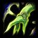
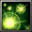

<!DOCTYPE html>
<html>
<head>
    <meta charset="utf-8">
    <meta name="viewport" content="width=device-width, initial-scale=1, maximum-scale=1">
    <title>Hero Intelligence</title>
    <link rel="stylesheet" type="text/css" href="bower_components/prism/themes/prism.css">
    <link rel="stylesheet" type="text/css" href="bower_components/todc-bootstrap-main/dist/css/bootstrap.min.css">
    <link rel="stylesheet" type="text/css" href="styles/main-presentation.css">
    <link rel="stylesheet" type="text/css" href="Custom CSS/Main.css">
    <link rel="stylesheet" type="text/css" href="Custom CSS/Int.css">
</head>
<body>
</body>
</html>
<nav role="navigation" class="navbar navbar-default">
    <div class="container">
        <div class="navbar-header">
            <button type="button" data-toggle="collapse" data-target="presentation-chooser" class="navbar-toggle">
                <span class="sr-only"></span>
                <span class="icon-bar"></span>
                <span class="icon-bar"></span>
                <span class="icon-bar"></span>
            </button>
            <a href="index.html" class="navbar-brand">DotA</a>
		</div>
        <div id="presentation-chooser" class="collapse navbar-collapse">
            <ul class="nav navbar-nav">
                <li class="dropdown">
                    <a data-toggle="dropdown" href="#" class="dropdown-toggle">Pilih Presentasi <b class="caret"></b></a>
                    <ul class="dropdown-menu">
                        <li><a href="1-Introduction.html">Pengenalan Kuliah</a></li>
                        <li><a href="2-TeknologiKolaborasi.html">Teknologi Kolaborasi</a></li>
                        <li><a href="3-PresentasiDenganBespokeJS.html">Presentasi dengan Bespoke.JS</a></li>
                        <li><a href="4-SCRUM.html">SCRUM</a></li>
                        <li><a href="5-UserStories.html">User Stories</a></li>
                        <li><a href="6-Trello.html">Trello dan Bug Reporting</a></li>
                        <li><a href="7-PengenalanKontrolVersi.html">Kontrol Versi</a></li>
                        <li><a href="8-DasarKontrolVersi.html">Dasar Kontrol Versi</a></li>
                    </ul>
                </li>
            </ul>
        </div>
    </div>
</nav>
<article id="presentation">
    <section>
        <h2>Hero Intelligence</h2>
        <h3>Sentinel - 1</h3>
            <ul>
                <li>RYLAI CRESTFALL - The Crystal Maiden</li>
                <li>AIUSHTHA - The Enchantress</li>
                <li>PUCK - The Faerie Dragon</li>
                <li>CHEN – The Holy Knight</li>
                <li>EZALOR – The Keeper of the Light</li>
                <li>ZEUS – The Lord of Olympus</li>
                <li>FURION – The Phropet</li>
                <li>NORTROM - The Silencer</li>
                <li>LINA INVERSE - The Slayer</li>
                
                
                
        	</ul>
   	</section>
    <section>
    	<h2>Rylai Crestfall  -  Crystal Maiden</h2>
            <ul>
            <div class="kiri">
                <li>
					
                    <div class="character">
                    	
                    </div>
                	<h3>ADVANCED STATISTIC</h3>
                    	<p>Affiliation: Sentinel
                        <p>Attack Animation: 0.55 / 0
                        <p>Damage: 38 - 44
                        <p>Casting Animation: 0.3 / 2.4
                        <p>Armor: 1.28
                        <p>Base Attack Time: 1.7
                        <p>Movespeed: 280
                        <p>Missile Speed: 900
                        <p>Attack Range: 600
                        <p>Sight Range: 1800 / 800</p>
                </li>
            </div>
            <div class="kanan">
            	<li>
                	<h3>HERO INTRODUCTION</h3>
                    <p>The Crystal Maiden is a powerful disabler and support spellcaster. Each of her offensive spells impairs the target in some way, making her a valuable addition to any lineup. Crystal Nova allows her to blast multiple enemies with chilling damage, and Frostbite completely stops a single target enemy from moving for several seconds. Freezing Field causes immense damage and slows everything in a large area around Rylai, but her natural fragility makes it a difficult spell to use to its full effect. Despite the usefulness of all of her spells to her allies, perhaps her greatest asset to her team is Brilliance Aura. This aura gives all allies across the map a significant boost to their mana regeneration, giving them plenty of energy to use their own spells no matter where they are. Although she tends to take on a supportive role, the Crystal Maiden is still one of the most valuable heroes for any team.</p>
                </li>
                <li>
                    <h4>BACKGROUND STORY</h4>
                    <p>Adept in the manipulation of frost and ice, Rylai is the very image of elegeance and grace. Trained by a renegade wizard deep in the heart of Winterspring, Rylai brings to the Sentinel her prowess in the arts of magic. With a vast arsenal of spells, she wreaks havoc upon her foes - be it with powerful blasts of frost to send them fleeing in panic, or be it by rendering them immobile in ice. Her foes tremble in fear as the ground beneath implodes in mighty novas of frost in a dazzling array, obliterating all who dare oppose her</p>
                </li>
                <li>
                    <div class="skill">
                        <h4>Skills</h4>
                        
                        
                        
                        
					</div>
                 </li>
            </div>
            </ul>
    </section>
    <section>
    	<h2>Aiushtha  -  Enchantress</h2>
            <ul>
            <div class="kiri">
                <li>
					
                    <div class="character">
                    	
                    </div>
                	<h3>ADVANCED STATISTIC</h3>
                    	<p>Affiliation: Sentinel
                        <p>Attack Animation: 0.3 / 0.7
                        <p>Damage: 45 - 47
                        <p>Casting Animation: 0.3 / 0.51
                        <p>Armor: 0.66
                        <p>Base Attack Time: 1.7
                        <p>Movespeed: 310
                        <p>Missile Speed: 900
                        <p>Attack Range: 550
                        <p>Sight Range: 1800 / 800</p>
                </li>
            </div>
            <div class="kanan">
            	<li>
                	<h3>HERO INTRODUCTION</h3>
                    <p></p>
                </li>
                <li>
                    <h4>BACKGROUND STORY</h4>
                    <p>Although all Dryads are Cenarius' daughters, Aiushtha is said to be his first and favorite. Because of her direct relation to him, she has borrowed much of his power. This is demonstrated by her control over the shy Wisps which she uses to heal her allies, and her ability to bring an opponent under the will of the Sentinel. Preferring ranged combat to melee, she fashioned a spear that strikes with more force the further her target is away. Her agility is unmatched, and any opponent attempting to kill her will find she skips ahead of them with surprising ease.</p>
                </li>
                <li>
                    <div class="skill">
                        <h4>Skills</h4>
                        
                        
                        
                        
					</div>
                 </li>
            </div>
            </ul>
    </section>
    <section>
        <h3>Sentinel - 2</h3>
            <ul>
            	<li>RAIJIN THUNDERKEG - The Strom Spirit</li>
            	<li>ALLERIA – The Windrunner</li>
                <li>THRALL– The Disruptor</li>
                <li>SQUEE SPLEEN AND SPOON - The Goblin Techies</li>
                <li>JAKIRO – The Twin Head Dragon</li>
                <li>BOUSH – The Tinker</li>
                <li>RHASTA – The Shadow Shaman</li>
                <li>RUBICK – The Grand Magus</li>
                <li>DRAGONUS - The Skywrath Mage</li>
                <li>NERIF - The Oracler</li>
                
            </ul>
    </section>
    <section>
        <h2>Hero Intelligence</h2>
        <h3>Scourge - 1</h3>
        <ul>
            <li>Atropos – The Bane Elemental</li>
            <li>Ish'kafel – The Dark Seer</li>
            <li>Krobelus – The Death Prophet</li>
            <li>Lion – The Grand Magus</li>
            <li>Darchrow - The Enigma</li>
            <li>Kel'thuzad - The Lich</li>
            <li>Rotund'jere - The Necrolyte</li>
            <li>Pugna - The Oblivion</li>
            <li>Harbinger - The Obsidian Destroyer</li>
            <li>Akasha - The Queen of Pain</li>
        </ul>
    </section>
    <section>
        <h3>Scourge - 2</h3>
        <ul>
            <li>Demnok Lannik – The Warlock</li>
            <li>Eredar – The Shadow Demon</li>
            <li>Jin'zakk – The Batrider</li>
            <li>Dazzle – The Shadow Priest</li>
            <li>Kael - The Invoker</li>
            <li>Visage - The Necro'lic<</li>
            <li>Leshrac the Malicious - The Tormented Soul</li>
            <li>Vol'Jin - The Witch Doctor</li>
            <li>Kaldr - The Ancient Apparition</li>
            <li>Auroth - The Winter Wyvern</li>
        </ul>
    </section>
</article>
<script src="bower_components/bespoke.js/dist/bespoke.min.js"></script>
<script src="bower_components/bespoke-bullets/dist/bespoke-bullets.min.js"></script>
<script src="bower_components/bespoke-scale/dist/bespoke-scale.min.js"></script>
<script src="bower_components/bespoke-hash/dist/bespoke-hash.min.js"></script>
<script src="bower_components/bespoke-progress/dist/bespoke-progress.min.js"></script>
<script src="bower_components/bespoke-state/dist/bespoke-state.min.js"></script>
<script src="bower_components/prism/prism.js"></script>
<script src="bower_components/prism/components/prism-bash.min.js"></script>
<script src="scripts/main.js"></script><script src="bower_components/jquery/jquery.min.js"></script>
<script src="bower_components/todc-bootstrap-main/dist/js/bootstrap.min.js"></script>